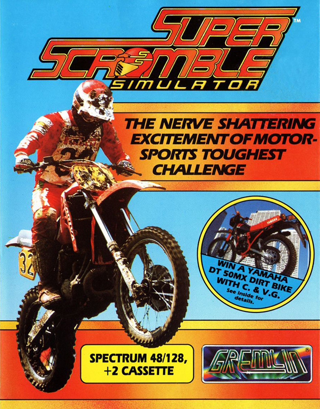
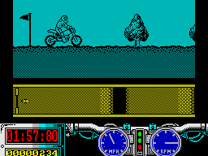

Super Scramble Simulator


{kind=link}

| Publisher: | Gremlin Graphics |
| Price: | £8.99 |
| Year: | 1989 |
| Source: | CRASH, Issue 66 |

I half expected this to be a version of the first ever scrolling shoot-’em-up, Scramble. Thank goodness it isn’t! What we have instead is a modern version of the old classic motorbike scrambling game Kikstart, with much bigger graphics and even more playability.
Super Scramble Simulator is spread over 15 levels, five blocks of three. There are three mud courses and two concrete; each type has its own type of obstacle. For instance, the concrete tends to have ramps, skips (yeah!) and lorries, and the mud courses usually have lots of hills and logs.

Each course has a qualify time — you incur time penalties by going too fast over certain sections, crashing onto either wheel, letting the bike stall, or going off course. If you manage to complete the course with time to spare, the remaining seconds get added to your score. It you don’t... game over.
Should you fail an obstacle several times, then you’ll get taken onto the next one, incurring an extra big penalty. On the first two courses, you get three attempts at each one, on the second couple of levels, four attempts, and on the last one, seven!
Super Scramble Simulator is an excellent game, however, it has one fault, and that, unfortunately, is a big one: having to go back to the beginning after playing through the first three sets of courses is very, very annoying. That said, it manages to retain a lot of addictiveness despite the frustration (like life really) (the oracle speaks — Ed). The graphics are good, the sound is superb, the game is fun, the price is right. So where’s Leslie Crowther? Playing Super Scramble Simulator if he’s got any sense!
MIKE
Brrm, brrm, who remembers that brill program Kikstart? Gremlin seem to have, with their great version of the old fave. Super Scramble Simulator (sounds like something from Code Masters!) is packed full of excellent graphics, tricky course layouts and loads of addictiveness (no it can’t be from CodeMasters!!). Of all the courses the obstacle ones are the best, with such things as cars, trailer, barrels and water to be negotiated. I have spent hours playing SSS and apart from the back-to-the-beginning problem, Super Scramble Simulator is an excellent game.
NICK
RATING
Super little game, with all the fun of scrambling and no dirty trousers
| Presentation: | 89% |
| Graphics: | 91% |
| Sound: | 91% |
| Playability: | 91% |
| Addictivity: | 88% |
| Overall: | 91% |